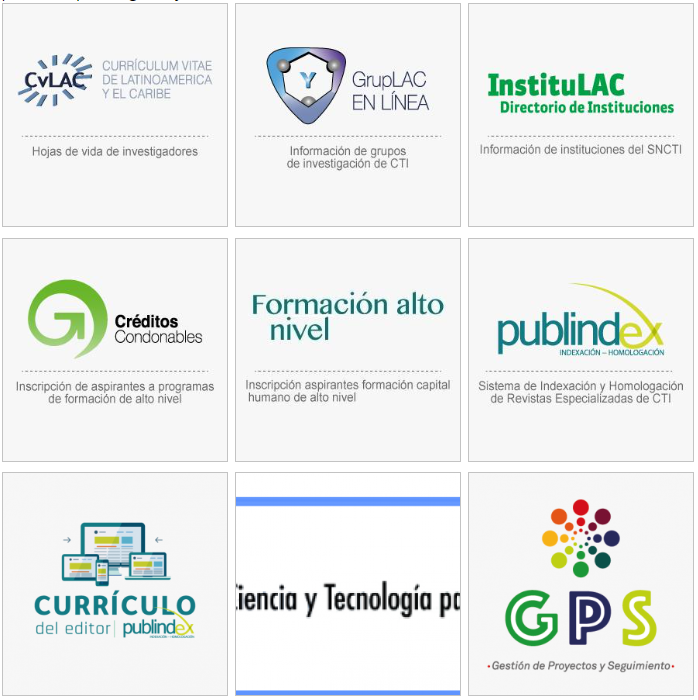
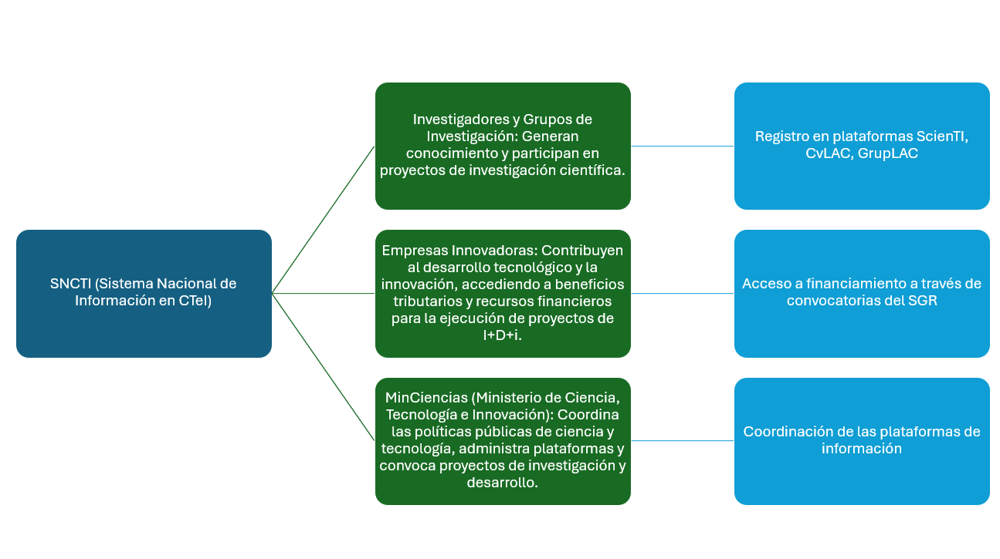
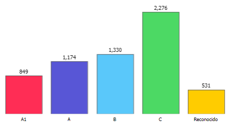
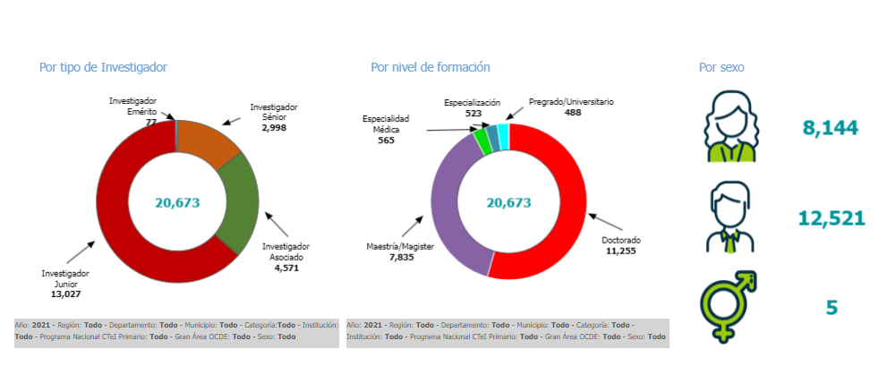
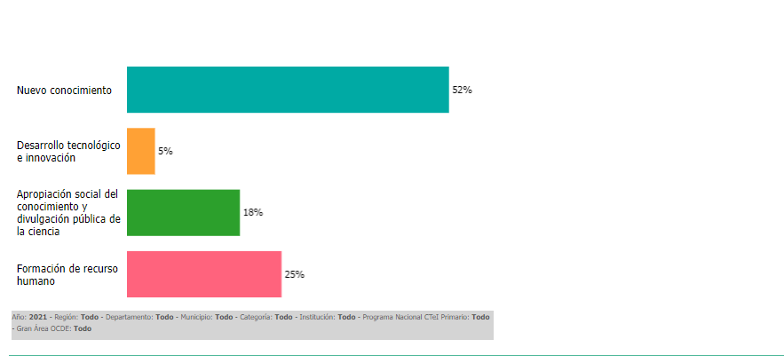

Sistemas de Información en Ciencia, Tecnología e Innovación de Colombia
Politica Pública
Análisis de políticas públicas en CTeI de Colombia y su impacto regional y local
Juan José Gallego Mesa
El Sistema Nacional de Información en Ciencia, Tecnología e Innovación (SNCTI) de Colombia tiene como objetivo principal recopilar, organizar y difundir información sobre las actividades de ciencia, tecnología e innovación (CTeI) en todo el país. Este sistema, promovido por el Ministerio de Ciencia, Tecnología e Innovación (MinCiencias), es una herramienta estratégica diseñada para apoyar la toma de decisiones basadas en datos, facilitando la colaboración entre actores clave del ecosistema científico a nivel nacional y regional.(Minciencias,2024)
Contexto del SNCTI:
El SNCTI está compuesto por varias herramientas y subsistemas que permiten gestionar y coordinar la información sobre proyectos de investigación, investigadores, centros de desarrollo tecnológico, empresas y otras organizaciones que participan en actividades de CTeI. Según lo estipulado en la Ley 1286 de 2009, el SNCTI es un sistema abierto que integra políticas, programas, estrategias y metodologías para la gestión y promoción de la investigación científica y la innovación tecnológica en el país (Minciencias,2024)
Entre los principales componentes del Sistema Nacional de Información en Ciencia, Tecnología e Innovación (SNCTI), se destacan diversas plataformas y sistemas que colaboran en la gestión y articulación de las actividades de ciencia, tecnología e innovación en Colombia. Estos componentes incluyen:
-Observatorio Colombiano de Ciencia y Tecnología (OCyT): Continúa operando como un mecanismo fundamental para monitorear y generar indicadores sobre el estado de la ciencia y la tecnología en Colombia, siendo crucial para la evaluación de políticas públicas
-Publindex: Este sistema sigue gestionado por MinCiencias y es responsable de evaluar y clasificar las revistas científicas nacionales, asegurando que cumplan con los estándares internacionales para visibilizar la investigación colombiana
-ScienTI-Colombia: Centraliza información sobre investigadores, grupos de investigación e instituciones académicas a través de plataformas como CvLAC (que gestiona los currículums de los investigadores) y GrupLAC (que contiene información sobre los grupos de investigación). ScienTI-Colombia sigue siendo una herramienta clave para la gestión y visibilidad de la investigación científica, promoviendo la cooperación y el intercambio de conocimiento entre instituciones nacionales e internacionales.
Línea de tiempo de sistemas de información en CTeI en Colombia
Según (Gonzalez,2013) y (Minciencias,2024) los principales hitos en el desarrollo de los sitemas de información en CTeI:
Década de 1990
Durante esta década, el gobierno colombiano, a través de Colciencias, identificó la necesidad de centralizar y coordinar la información relacionada con la investigación científica en el país. Esta necesidad surgió como parte del fortalecimiento del Sistema Nacional de Ciencia, Tecnología e Innovación (SNCyT). Se concibieron los primeros sistemas para registrar la producción científica y los actores involucrados.
1998
Colciencias lanzó CvLAC (Curriculum Vitae Latinoamericano y del Caribe) y GrupLAC (Grupos de Investigación en Latinoamérica y el Caribe). Estos módulos permitieron el registro de investigadores individuales y grupos de investigación, estableciendo una base de datos centralizada para gestionar la información de las actividades de CTeI en Colombia.
CvLAC permitió que los investigadores documentaran su trayectoria y producción académica, mientras que GrupLAC fue clave para formalizar la información de los grupos de investigación en el país.
2000
Consolidación del Sistema Nacional de CTeI. ScienTI se convierte en el sistema central de información, facilitando la gobernabilidad del SNCyT.En el marco de la política de ciencia y tecnología de Colombia, el Sistema Nacional de Ciencia, Tecnología e Innovación (SNCyT) se consolida, y ScienTI se convierte en el sistema central de información.
La plataforma ScienTI-Colombia fue clave en la consolidación del SNCyT, proporcionando visibilidad y acceso a la información sobre proyectos, investigadores y grupos. Este sistema integró progresivamente más actores y datos.
2005
Colciencias amplió la plataforma ScienTI con varios subsistemas nuevos:
ProyecCOL: Registro de proyectos de investigación e innovación financiados por diferentes entidades, incluyendo Colciencias.
DocLAC: Sistema de registro de programas doctorales en el país.
Publindex: Índice Bibliográfico Nacional para la evaluación y visibilidad de revistas científicas. Estos nuevos módulos permitieron una mayor articulación de la información de CTeI y mejoraron la capacidad de análisis y monitoreo de la producción científica.
2010
La plataforma ScienTI-Colombia se integró a la Red Iberoamericana de ScienTI, facilitando el intercambio de información científica con otros países de la región. Esta red, que incluye a países como Argentina, Brasil, Chile, y otros, permite que los investigadores y sus producciones sean visibles a nivel internacional, favoreciendo la colaboración entre países y el acceso a bases de datos globales.
2015 en adelante
En los últimos años, la plataforma ScienTI se ha modernizado con nuevas tecnologías y mayor interoperabilidad. Además, se vincula con la Red Colombiana de Información Científica, creada para coordinar la recolección, preservación y acceso abierto al conocimiento científico. Esta red tiene un enfoque en la gobernanza de los datos y facilita la integración de diferentes actores nacionales e internacionales, promoviendo el acceso público y la transparencia en la investigación.
Aporte a las politicas públicas de CTeI:
| Componente | Aporte a las Políticas Públicas de CTeI |
|---|---|
| ScienTI-Colombia | Centraliza la información sobre investigadores, grupos de investigación y proyectos, facilitando la toma de decisiones informadas basadas en datos y promoviendo la visibilidad de los actores clave del ecosistema CTeI (Gonzalez,2013) |
| Acceso a Financiación y Convocatorias | Permite a los actores de CTeI acceder a convocatorias de financiación y beneficios tributarios, fomentando la innovación y la competitividad a nivel regional y nacional, y gestionando el acceso a recursos del Sistema General de Regalías.(Minciencias,2024) |
| Transferencia de Tecnología | Promueve la interacción entre los actores del sistema para facilitar la transferencia de tecnología, mejorando la competitividad del sector productivo y alineando las políticas públicas con los desarrollos científicos.(Minciencias,2024) |
| Fortalecimiento de Capacidades Regionales | Apoya la creación de políticas públicas adaptadas a las necesidades locales, permitiendo una mayor equidad en el acceso a la innovación y al desarrollo científico en todas las regiones del país.(Minciencias,2024) |
| Monitoreo y Evaluación | El SNCTI, a través de plataformas como el Observatorio Colombiano de Ciencia y Tecnología (OCyT), genera indicadores que permiten evaluar el impacto de las políticas públicas y ajustar estrategias para optimizar el desarrollo científico en Colombia.(Minciencias,2024) |
Interacción entre Actores, Instituciones y Políticas en el SNCTI
El Sistema Nacional de Información en Ciencia, Tecnología e Innovación (SNCTI) facilita la interacción entre actores clave como investigadores, empresas, y centros de investigación, con instituciones gubernamentales y políticas públicas. Esta interacción, gestionada a través de plataformas de información como ScienTI, permite la coordinación efectiva de esfuerzos para la investigación, innovación y desarrollo tecnológico. El gráfico a continuación ilustra cómo estos actores e instituciones se conectan entre sí, promoviendo la generación de conocimiento y el acceso a financiamiento mediante convocatorias públicas y la transferencia tecnológica.
Productos CTeI y su asociación a los sistemas de información existentes:
| Producto CTeI | Relación con Sistemas de Información en CTeI |
|---|---|
| Nuevo Conocimiento | Los sistemas de información, como ScienTI y bases de datos como CvLAC, permiten recopilar y gestionar datos sobre investigaciones y proyectos, facilitando la generación de nuevo conocimiento al proporcionar acceso a información relevante para investigadores y académicos. |
| Desarrollo Tecnológico | Plataformas como GrupLAC y sistemas similares son ejemplos de desarrollo tecnológico que facilitan el registro y la gestión de datos sobre la producción científica. Estos sistemas promueven la interoperabilidad y permiten monitorear los avances científicos en tiempo real. |
| Formación de Recursos Humanos | Los sistemas de información como Publindex y ScienTI facilitan el acceso de estudiantes e investigadores a recursos científicos, mejorando su formación. Además, fomentan el desarrollo de competencias tecnológicas necesarias para gestionar la información en el ecosistema CTeI. |
| Apropiación Social del Conocimiento | Las plataformas de información, como Publindex y otros repositorios abiertos, permiten la difusión de resultados de investigación para el público en general, promoviendo la apropiación social del conocimiento y garantizando el acceso público a la ciencia financiada con recursos públicos. |
Impactos en la sociedad Colombiana:
Los Sistemas de Información en Ciencia, Tecnología e Innovación (CTeI) en Colombia han tenido impactos significativos en varios frentes de la sociedad. En particular, el acceso abierto y la transparencia han mejorado la democratización del conocimiento y fomentado la innovación y la competitividad en el país. (OCYT,2024)
Transparencia y Acceso a la Información: A través de herramientas como el Atlas del Conocimiento y plataformas como ScienTI, se ha facilitado el acceso abierto a la producción científica financiada con recursos públicos. Esto promueve una mayor transparencia en la investigación y permite que ciudadanos, investigadores y empresas accedan a información clave para la toma de decisiones y el desarrollo de nuevos proyectos científicos. Esto contribuye a una mayor confianza y participación social en los avances científicos de Colombia
Fomento de la Innovación y Competitividad: El acceso a datos sobre investigaciones y la posibilidad de participar en convocatorias públicas ha permitido a las empresas innovadoras acceder a financiamiento y beneficios tributarios. Esto no solo fomenta el desarrollo de nuevas tecnologías, sino que también fortalece la competitividad de Colombia a nivel global. Los fondos como el Sistema General de Regalías (SGR) han gestionado miles de millones de pesos para financiar proyectos innovadores en diversas regiones del país
Modelos y Mecanismos de Medición en Sistemas de Información en CTeI de Colombia
En el contexto de los Sistemas de Información en Ciencia, Tecnología e Innovación (CTeI) de Colombia, se utilizan varios modelos y mecanismos de medición para evaluar el impacto, desempeño y la eficiencia de las actividades científicas y tecnológicas. Estos mecanismos son fundamentales para generar indicadores clave que permiten medir el progreso y apoyar la toma de decisiones en políticas públicas. A continuación, se describen algunos de los principales modelos y mecanismos de medición asociados (Minciencias,2024)
| Modelo/Mecanismo | Descripción |
|---|---|
| Indicadores de Producción Científica (Publindex y ScienTI) | Evalúa la calidad de las publicaciones científicas a través de indicadores como el factor de impacto y el número de citas. ScienTI, con plataformas como CvLAC y GrupLAC, mide la producción científica y tecnológica de los investigadores y grupos de investigación. |
| Medición de la Innovación Empresarial | Utiliza indicadores sobre proyectos financiados por el Sistema General de Regalías (SGR), retorno de inversión en I+D+i y creación de empleo en sectores tecnológicos, midiendo así el impacto de la innovación en la competitividad empresarial. |
| Monitoreo de Impacto Regional | El Observatorio Colombiano de Ciencia y Tecnología (OCyT) genera indicadores regionales que miden la inversión en investigación, cantidad de investigadores por cada mil habitantes, y la participación en proyectos de CTeI financiados regionalmente. |
| Evaluación del Capital Humano | Evalúa la cantidad de becas otorgadas, investigadores formados y su participación en proyectos de investigación, asegurando que el país esté desarrollando talento en áreas prioritarias de ciencia y tecnología. |
Caracterización de grupos de investigación
Investigadores reconocidos
Producción científica
Referencias
-Esperanza, S., & Varela, M. (2006). Nuevas políticas y estrategias de articulación del sistema de ciencia, tecnología e innovación colombiano.
-Gonzalez, R. A. (2013). Sistema de información ScienTI Artefacto central del Sistema Nacional de Ciencia y Tecnología. https://www.researchgate.net/publication/259673502
-Minciencias. (2019). Así avanza la ciencia, la tecnología y la innovación. Https://Minciencias.Gov.Co/Sala_de_prensa/Asi-Avanza-La-Ciencia-La-Tecnologia-y-La-Innovacion-En-El-Gobierno-Del-Presidente.
-Minciencias. (2024a). Convocatoria para el registro de proyectos que accederán a los beneficios tributarios por inversión en proyectos de ciencia, tecnología e innovación año 2023. Https://Minciencias.Gov.Co/Convocatorias/Innovacion-Innovacion-y-Productividad/Convocatoria-Para-El-Registro-Proyectos-Que.
- Minciencias. (2024b). Historia de la red colombiana de información científica. Https://Redcol.Minciencias.Gov.Co/Content/Historia.
- Minciencias. (2024c). La ciencia en cifras, grupos de investigación. Https://Www.Minciencias.Gov.Co/La-Ciencia-En-Cifras/Grupos.
-Minciencias. (2024d). SISTEMA NACIONAL DE CIENCIA TECNOLOGÍA E INNOVACIÓN (SNCTI). Https://Minciencias.Gov.Co/Glosario/Sistema-Nacional-Ciencia-Tecnologia-e-Innovacion-Sncti.
-OCYT. (2024). Atlas del conocimiento. Https://Atlasdelconocimiento.Ocyt.Org.Co/.